UX/UI дизайн
Психология в UX
Теперь с развитием технологий искусственного интеллекта и, в частности, нейросетей, дизайнеры должны уделять больше внимания развитию определенных навыков и качеств:
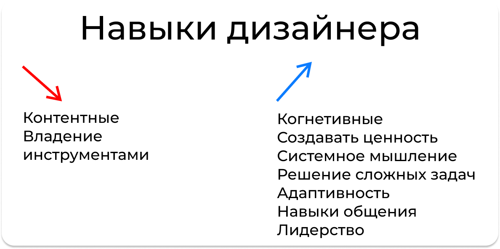
Когнитивные навыки
Нейросети могут выполнять многие рутинные дизайнерские задачи, такие как генерация изображений, иллюстраций, макетов. Дизайнеры должны развивать когнитивные навыки анализа, синтеза и критического мышления, чтобы эффективно применять AI-инструменты и оценивать их результаты.
Адаптивность
Технологии стремительно развиваются, и нейросети постоянно совершенствуются. Дизайнерам нужно быть гибкими, быстро осваивать новые инструменты и методы, чтобы оставаться конкурентоспособными.
Системное мышление
Дизайн становится все более комплексным, с множеством взаимосвязанных элементов. Способность видеть "большую картину", понимать системные взаимодействия и последствия решений - ценный навык для дизайнера.
Уникальность и творчество
Нейросети эффективны в генерации стандартного, шаблонного контента. Дизайнеры должны фокусироваться на создании уникального, креативного и эмоционального дизайна, который не может быть полностью автоматизирован.
Человеко-ориентированный подход
Несмотря на возможности AI, дизайнеры должны оставаться ориентированными на потребности и опыт пользователей. Глубокое понимание людей, их мотивов и поведения становится ключевым навыком.
Решение сложных задач
Нейросети могут справляться с рутинными, повторяющимися задачами дизайна. Но дизайнерам нужно уметь решать более сложные, неструктурированные проблемы, выходящие за рамки возможностей AI. Это требует критического мышления, креативности и способности к системному анализу.
Например, разработка омниканальной экосистемы продуктов и услуг, где пользователь переходит между приложением, сайтом, физическим магазином. Дизайнер должен спроектировать целостный, интуитивный и бесшовный опыт, учитывая множество взаимосвязанных компонентов.
Создание ценностии
Дизайнеры должны фокусироваться на создании реальной ценности для бизнеса и пользователей. Это значит не просто "красиво оформлять", а глубоко понимать бизнес-цели, потребности людей и находить инновационные решения. Такие навыки, как эмпатия, стратегическое мышление и предпринимательский подход, становятся критически важными.
Лидерство
Дизайнеры должны выступать лидерами, влияя на принятие решений и направление развития продуктов. Для этого нужны убедительные коммуникативные навыки, способность вести за собой кросс-функциональные команды и стратегическое видение. Дизайнер должен стать не просто "художником", а полноценным бизнес-партнером.
9 приёмов на каждый день
1. Вкладываюсь — ценю
По-другому этот принцип называют "Эффект Икеа".
Суть "эффекта Икеа" заключается в том, что покупатели Икеа ценят и получают большее удовлетворение от мебели, которую им пришлось самим собирать.
Когда пользователь сам участвует в сборке или создании чего-либо, он чувствует свой вклад и достижение. Это создает чувство гордости и большую привязанность к полученному результату.
В веб-дизайне аналогичный эффект можно получить, когда пользователи "вкладываются" в изучение и использование высококачественных, детализированных элементов дизайна.
Как применять
1. Создавай возможности для вовлечения пользователя:
Интерактивные элементы, которые позволяют "поиграть" с дизайном. Например, на сайте Apple пользователь может вращать 3D-модель устройства, чтобы рассмотреть его со всех сторон.
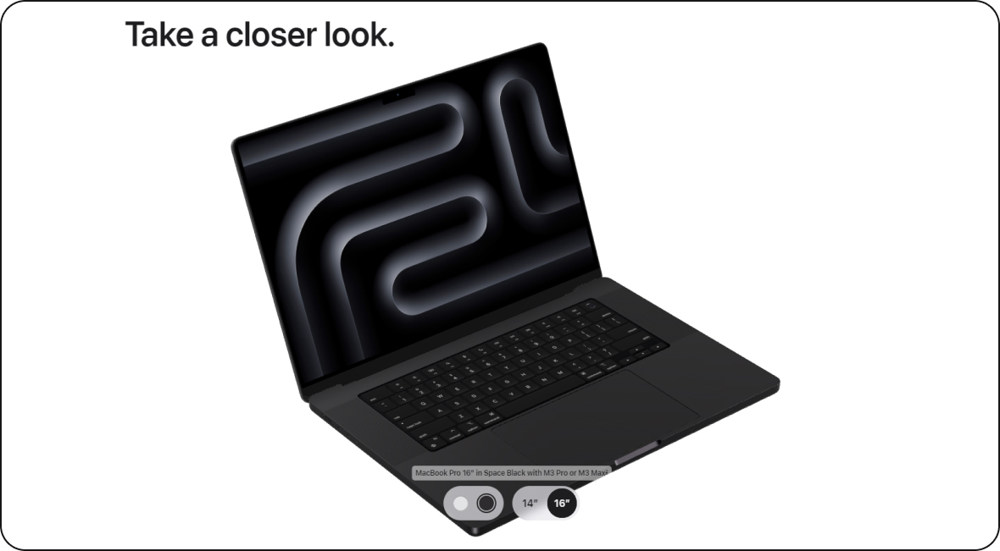
Скриншот сайта Apple
Детальные визуализации, которые дают почувствовать качество. Например, на сайте Apple используются крупные, высококачественные изображения продуктов, снятые под разными углами. Это позволяет пользователю детально рассмотреть дизайн, материалы и отделку устройств.
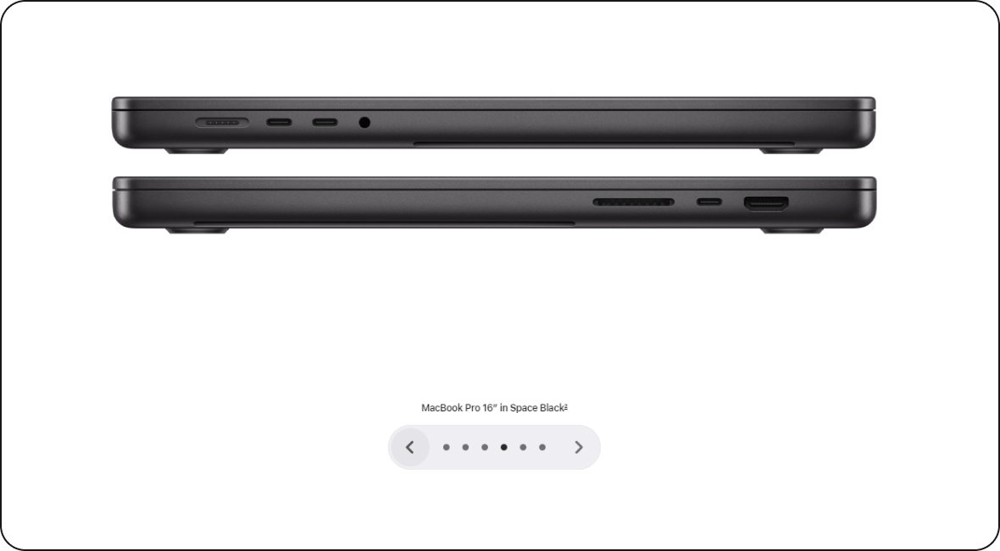
Скриншот сайта Apple
Это побуждает пользователя вкладывать время и внимание, чтобы детально изучить продукт.
2. Демонстрируй ценность на каждом этапе:
Четко показывай, какую пользу получит пользователь. Например, Casper четко показывает, как их матрасы улучшают сон и самочувствие. Когда пользователь вникает в эти преимущества, он начинает больше ценить предлагаемое решение.
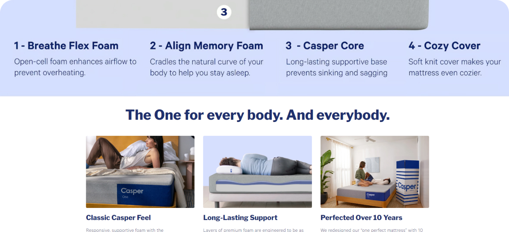
Скриншот сайта Casper
Обосновывай, почему именно твой продукт/сервис лучший выбор. Casper предоставляет очень подробные характеристики и объяснения используемых технологий. Когда пользователь читает и изучает эту информацию, он начинает больше ценить качество и продуманность матраса.
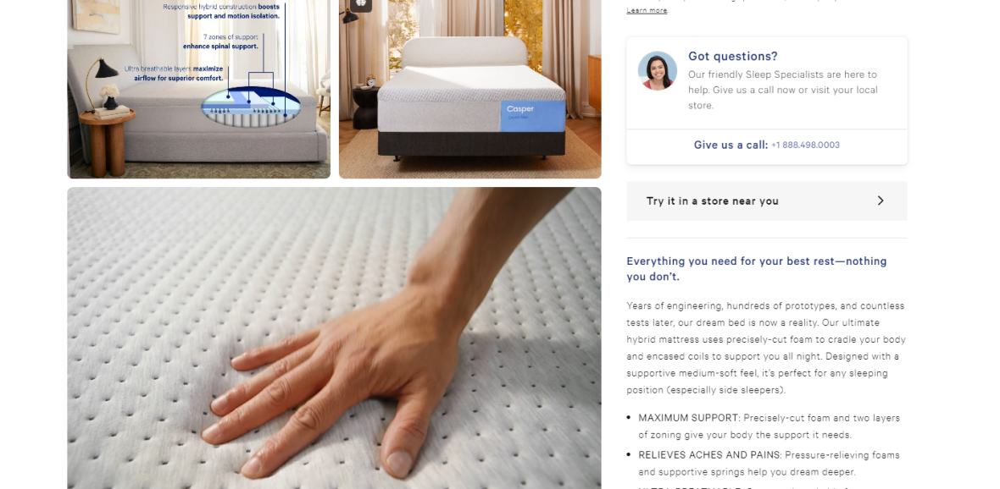
Скриншот сайта Casper
3. Делайте процесс открытым и прозрачным:
Показывай "за кулисами", как создается твой продукт/сервис. Например, Pаtagonia очень подробно рассказывает на своем сайте об используемых материалах, производственных процессах и технологиях.
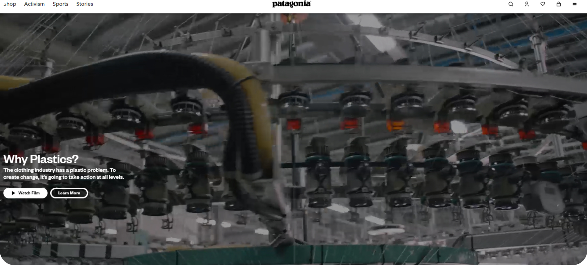
Скриншот сайта Patagonia
Раскрывай информацию о материалах, технологиях, команде. На сайте Patagonia большое внимание уделяется рассказу о философии, ценностях и истории компании. Подробно представлена команда дизайнеров, инженеров и экспертов, стоящих за продуктами бренда.
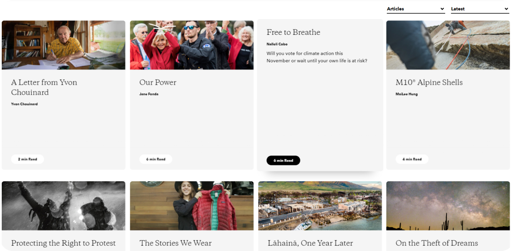
Скриншот сайта Patagonia
Такой подход позволяет Patagonia раскрыть "кухню" производства и команду за брендом. Это вызывает доверие и вовлекает пользователей в более глубокое понимание и ценение продуктов компании. Люди чувствуют причастность к тому, как создается их любимая одежда.
2. Эффект дефицита и запрета
Эффект дефицита:
Создание ощущения ограниченности или дефицита чего-либо (товара, услуги, предложения) побуждает людей действовать быстрее.
Например, на странице с результатами поиска отелей Booking.com активно использует информацию о "последних доступных номерах". Можно увидеть сообщения типа "Осталось всего 2 номера по этой цене". Это создает ощущение ограниченности вариантов, побуждая пользователей бронировать быстрее.
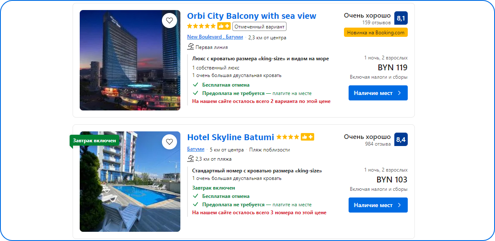
Скриншот сайта Booking
Эффект запрета:
Запрет или ограничение чего-либо вызывает у людей повышенный интерес и желание заполучить это.
Например, cообщения о том, что определенное предложение или возможность "больше не будут доступны", cпециальные предложения, которые "можно купить только сегодня", контент или функции, которые "доступны только для VIP-пользователей".
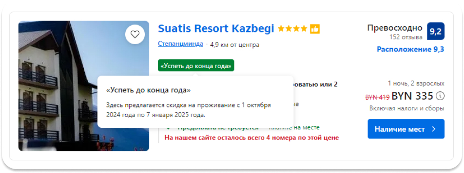
Скриншот сайта Booking
3. Экономия времини
Основная идея заключается в том, чтобы максимально упростить и ускорить выполнение пользователями их задач на сайте, тем самым экономя их время и усилия.
1. Быстрый доступ к наиболее востребованному:
- Размещение на главной странице ссылок на самые популярные разделы, товары или услуги
- Организация навигации таким образом, чтобы пользователи могли быстро найти нужную информацию
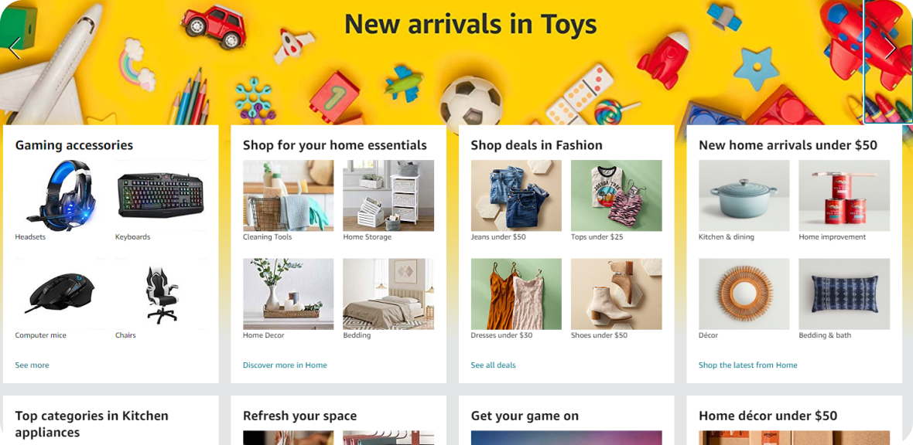
Скриншот сайта Amazon
Сайт Amazon.com имеет на главной странице быстрые ссылки на самые популярные категории товаров, такие как "Электроника", "Мода" и "Книги".
2. Предзаполнение форм:
- Автоматическое заполнение некоторых полей (например, адреса доставки) на основе имеющихся данных о пользователе
- Использование автозаполнения и подсказок при вводе информации
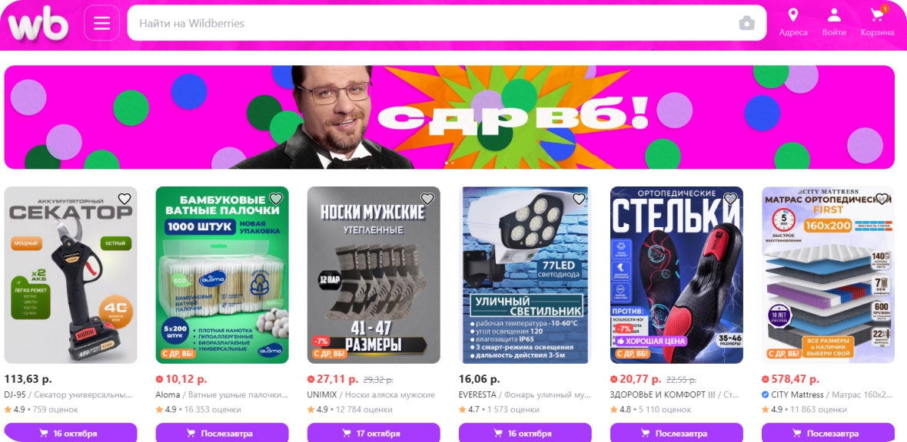
Скриншот сайта Wildberries
На сайте интернет-магазина Wildberries при оформлении заказа поле с адресом доставки предзаполняется данными из профиля пользователя.
3. Быстрое оформление заказа:
- Реализация "одностраничного" оформления заказа без лишних переходов
- Возможность сохранения платежных данных для ускоренного завершения следующих покупок
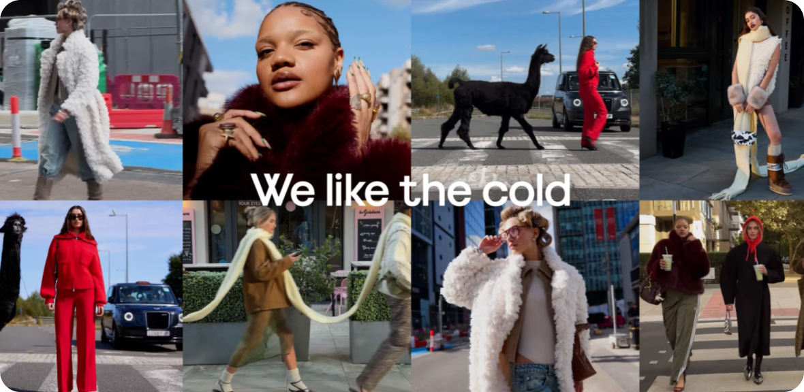
Скриншот сайта ASOS
На сайте ASOS реализована функция "Экспресс-покупка", которая позволяет оформить заказ всего за несколько кликов, без необходимости заполнять все поля.
4. Как съесть слона
Суть этого принципа заключается в том, что любую сложную или масштабную задачу, которая на первый взгляд кажется огромной и трудновыполнимой, можно разделить на последовательные, более простые этапы, которые легче решать по отдельности.
1. Декомпозиция сложных задач:
- Вместо предлагания пользователям сразу выполнить всю "работу" (например, заполнить длинную форму), задача разбивается на более мелкие логические шаги
- Каждый шаг становится менее сложным и более понятным для пользователя
2. Пошаговое руководство:
- Сложные бизнес-процессы (например, оформление заказа) разделяются на отдельные этапы с четкими инструкциями
- Это помогает пользователям понять, что от них требуется на каждом шаге, и не чувствовать себя "потерянными"
3. Постепенное раскрытие информации:
- Вместо отображения сразу всей необходимой информации, она подается пользователю небольшими порциями
- Это снижает когнитивную нагрузку и упрощает восприятие
Пример:
На ASOS процесс оформления заказа разделен на несколько последовательных этапов:
1. Корзина. На этом шаге пользователь видит выбранные товары и может управлять количеством, удалять или добавлять новые позиции. Реализован простой и понятный интерфейс для этих действий.
2. Доставка. На следующем этапе пользователь выбирает способ доставки и вводит адрес. Поля для ввода адреса разделены на несколько логичных шагов, что упрощает процесс.
3. Оплата. Далее пользователь выбирает способ оплаты и вводит платежные данные. Форма оплаты разделена на несколько логических блоков, что делает ее более понятной.
4. Подтверждение заказа. На заключительном этапе пользователю предоставляется итоговая информация о заказе, и он подтверждает оформление. На этом шаге также отображается прогресс пользователя в прохождении всего процесса.
5. Эффект окружения
Суть эффекта окружения заключается в том, что элементы дизайна, расположение объектов и общая атмосфера веб-страницы формируют определенное впечатление и настраивают пользователя на определенный лад.
На первой картинке iPhone представлен на официальном сайте Apple, а на второй - на сайте Avito.
Исходя из эффекта окружения, можно предположить, какие мысли и ощущения возникают у пользователя при виде iPhone на официальном сайте Apple и на сайте Avito:
На официальном сайте Apple:- "Это премиальный, инновационный продукт"
- "Я чувствую, что это престижная и статусная покупка"
- "Дизайн и функциональность iPhone полностью оправдывают его высокую цену"
На сайте Avito:- "Это просто подержанный iPhone, доступный по более низкой цене"
- "Я не чувствую, что это статусная или престижная вещь, просто рабочий инструмент"
- "Цена, условия продажи и состояние устройства будут ключевыми факторами при выборе"
6. Фрагментация
Суть эффекта фрагментации заключается в том, что разбиение контента и интерфейса на отдельные логические блоки способствует лучшему восприятию.
Пример:
Страница продукта (например, iPhone) разделена на независимые модули:
- Баннер с ключевыми характеристиками
- Блок "Почему этот iPhone"
- Секция с техническими особенностями
- Рекомендации и отзывы
7. Закон Джейкоба
Суть закона Джейкоба в том, что пользователи предпочитают, чтобы поведение в вашем продукте было то же, что и во всех остальных продуктах, которые они уже знают.
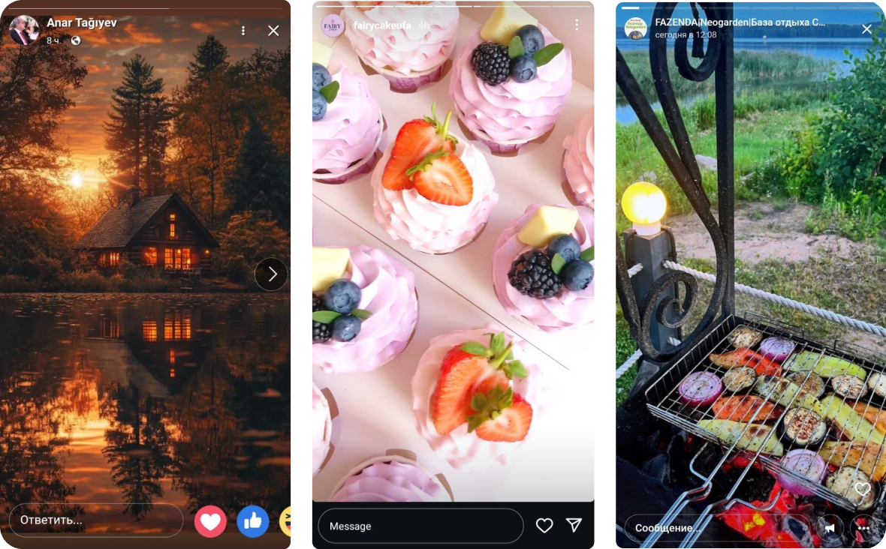
Сторис в трёх разных приложениях
Как применять?
1. Использование общепринятых шаблонов:
- Располагай элементы интерфейса (логотип, меню, поиск) в тех местах, где пользователи ожидают их увидеть
- Оформляй основные разделы (главная, каталог, корзина) в соответствии с устоявшимися стандартами
2. Привычная навигация:
- Используй традиционные паттерны навигации, такие как горизонтальное или вертикальное меню
- Делай навигацию интуитивно понятной и простой для пользователей
3. Стандартные элементы управления:
- Используй общеизвестные формы, кнопки, ссылки, которые ведут себя ожидаемым образом
- Придерживайся общепринятых соглашений для таких элементов
4. Знакомый визуальный стиль:
- Выбирай шрифты, цвета, иконки, которые выглядят привычно и знакомо пользователям
- Избегай чрезмерно экспериментального или нестандартного оформления
5. Последовательность в поведении:
- Обеспечь единообразие в функциях, терминологии, взаимодействии на всех страницах сайта
- Не меняй поведение элементов в зависимости от контекста.
6. Удобство для новых пользователей:
- Ориентируйся на опыт начинающих пользователей, а не только продвинутых
- Предоставляй понятные подсказки и руководства для освоения возможностей
8. Окситоцин = эмпатия
Принцип "окситоцин = эмпатия" в веб-дизайне основан на том, что выделение гормона окситоцина в организме человека напрямую связано с его способностью проявлять эмпатию и устанавливать социальные связи.
В дизайне этот принцип реализуется через:
1. Использование эмоциональных визуальных образов, вызывающих сопереживание
На сайте благотворительного фонда Oxfam используются фотографии людей, переживающих гуманитарные кризисы, чтобы вызвать сострадание у посетителей.
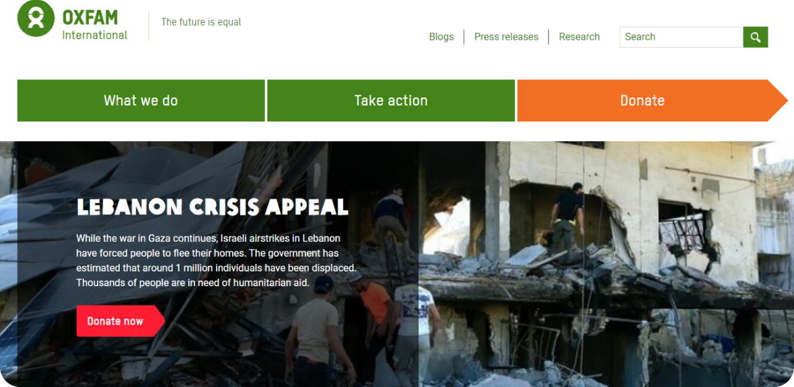
Скриншот сайта Oxfam
2. Создание историй и нарративов, затрагивающих чувства людей
На сайте организации Compassion International рассказываются истории конкретных детей, нуждающихся в помощи, чтобы вызвать эмоциональный отклик.
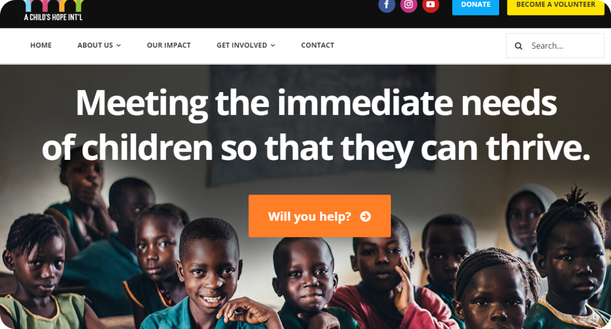
Скриншот сайта Compassion International
3. Обеспечение доступности и инклюзивности для всех посетителей
Сайт телеканала PBS имеет специальные функции для пользователей с ограничениями по слуху и зрению, чтобы обеспечить равный доступ к контенту.
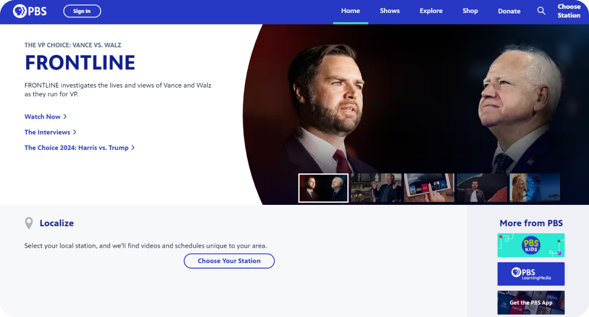
Скриншот сайта PBS
9. Подталкивание
Принцип подталкивания в веб-дизайне заключается в использовании различных приемов, которые незаметно направляют пользователя к желаемому для дизайнера или компании действию.
Ключевые аспекты этого принципа:
1. Преднамеренное изменение выбора:
Дизайнер создает "выбор по умолчанию", который пользователь склонен принять. Этот выбор выгоден для компании, но не навязывается напрямую. Например, на сайте Spotify по умолчанию выбран платный подписной план, хотя бесплатный вариант тоже доступен.
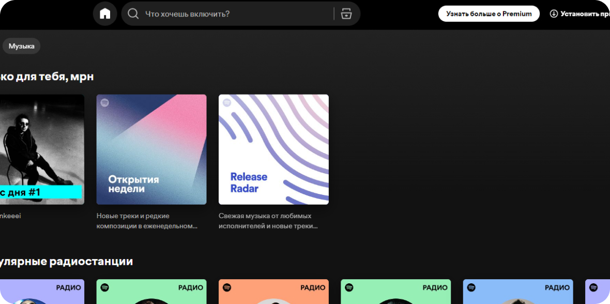
Скриншот сайта Spotify
2. Использование когнитивных искажений:
Учитываются психологические особенности восприятия человека. Например, эффект статус-кво, социального доказательства, ограниченности ресурсов. Например, на сайте Amazon часто используется эффект социального доказательства, показывая, что "этот товар также купили другие клиенты".
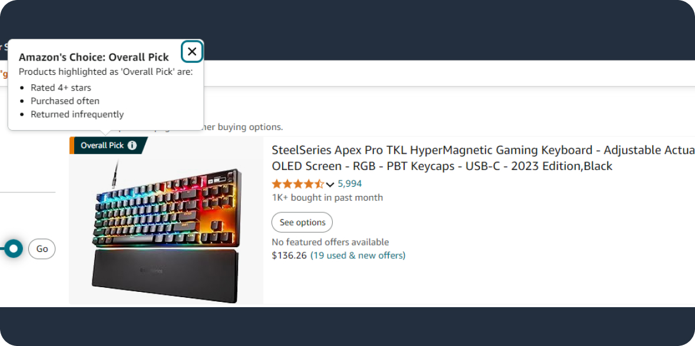
Скриншот сайта Amazon
3. Подача информации
Четкое структурирование и акцент на важных деталях. Использование визуальных подсказок, сравнений, якорных точек. Например, на сайтах онлайн-банков важная информация (остаток на счете, предстоящие платежи) размещается в центре экрана, привлекая внимание.
Скриншот сайта Т‑Банк
Цифровая наркомания
Цифровая норкомания — психологическое состояние, при котором человек испытывает навязчивую потребность постоянно использовать различные цифровые устройства и технологии.
Как цифровая норкомания проявляется в веб-дизайне?
1. Бесконечная лента и автоматическая подгрузка контента: Бесконечные ленты новостей, социальных сетей, видеороликов затягивают пользователя, побуждая его постоянно скроллить и просматривать новый контент.
2. Уведомления и всплывающие окна: Частые всплывающие сообщения, оповещения, push-уведомления создают ощущение постоянной необходимости проверять новую информацию. Это прерывает текущую деятельность пользователя и провоцирует отвлечение внимания.
3. Геймификация и "игровой дизайн": Использование элементов геймификации (баллы, достижения, рейтинги) стимулирует соревновательность и желание постоянно взаимодействовать с веб-ресурсом. Такие механики похожи на те, что используются в азартных играх, вызывая привыкание.
4. Автоматическое воспроизведение видео и аудио: Автоматическое запуск видео или аудио контента без явного действия пользователя удерживает его внимание. Это создает иллюзию непрерывного потока информации, не требующего усилий для переключения.
5. Персонализация и рекомендательные системы: Алгоритмы, подбирающие контент исходя из предпочтений пользователя, усиливают ощущение релевантности и затягивают его в "кроличью нору". Пользователь получает впечатление, что ему показывают то, что ему интересно, что способствует чрезмерному использованию.
Что с этим делать?
1. Продумывать дизайн с фокусом на пользу, а не только на вовлечение:
- Учитывать потребности пользователей и способствовать их продуктивности, а не только максимальному времяпрепровождению на сайте
- Избегать чрезмерно захватывающих механик, которые могут провоцировать зависимость
2. Внедрять инструменты осознанного использования:
- Предоставлять пользователям функции контроля времени, отключения уведомлений, ограничения доступа
- Создавать "режимы фокусировки", которые убирают отвлекающие элементы
3. Повышать цифровую грамотность пользователей:
- Обучать людей навыкам управления вниманием и балансом между цифровым и реальным миром
- Пропагандировать ответственное отношение к использованию технологий
4. Соблюдать этические принципы в дизайне:
- Отказываться от манипулятивных приемов, которые могут провоцировать зависимое поведение
- Ориентироваться на долгосрочную польза для пользователя, а не кратковременное вовлечение
5. Сотрудничать с экспертами в области цифровой гигиены:
- Привлекать психологов и специалистов по цифровому благополучию к разработке дизайна
- Учитывать рекомендации по профилактике и преодолению цифровой зависимости
Ключевая задача — создавать веб-интерфейсы, которые способствуют здоровому и осознанному использованию технологий, а не вызывают чрезмерную поглощенность ими.
Итоги
Навыки дизайнера
Когнитивные навыки
Умение обрабатывать и анализировать информацию, критическое мышление, способность к обучению и адаптации к новым условиям.
Создание ценности
Фокусировка на создании ценности для клиентов, коллег и общества в целом, что включает понимание их потребностей и желания.
Системное мышление
Способность рассматривать проблемы в рамках целостной системы, понимая взаимосвязи между элементами и влиянием отдельных частей на всё целое.
Решение сложных задач
Умение подходить к комплексным проблемам с структурированным планом действий, применяя творческие методы и анализируя причины.
Адаптивность
Способность быстро реагировать на изменение обстоятельств и находить эффективные решения в условиях неопределенности.
Навыки общения
Эффективное взаимодействие с другими, включая активное слушание, умение задавать вопросы и четко выражать свои мысли.
Лидерство
Способность вести людей к общим целям, вдохновлять и мотивировать команду на достижение успеха.
Дизайн приёмы
Вкладываюсь — ценю
Инвестирование времени и ресурсов в что-то или кого-то, чтобы повысить свою ценность, а также создавать атмосферу взаимного уважения.
Эффект дефицита и запрета
Использование принципа ограниченности: создание ощущения недостатка или запрета, чтобы повышать ценность предложений или идей.
Экономия времени
Оптимизация процессов для сокращения временных затрат, что позволяет сосредоточиться на более важных задачах.
Как съесть слона
Метод разбивания крупных задач на более маленькие и управляемые части, чтобы легче добиться целей.
Эффект окружения
Влияние социальной среды и окружения на поведение и восприятие. Создание позитивной обстановки может способствовать улучшению результата.
Фрагментация
Разделение информации или задач на более мелкие и усваиваемые части, что улучшает понимание и восприятие.
Закон Джейкоба
Принцип, согласно которому пользователи не будут принимать изменения, если они не понимают, зачем эти изменения необходимы. Это акцентирует внимание на необходимости объяснять и обосновывать нововведения.
Окситоцин = эмпатия
Использование принципов взаимопонимания и эмпатии для укрепления отношений в команде и создании доверительной атмосферы.
Подталкивание
Мягкие подсказки и изменения в среде, способствующие принятию правильных решений без принуждения, основанные на принципах поведенческой экономики.
Практика
Вкладываюсь — ценю
Разработай интерактивные элементы на своем сайте, такие как кнопки с анимацией при наведении, слайдеры или всплывающие окна, которые отвечают на действия пользователей. Проведи тестирование, чтобы определить, какие элементы наиболее эффективно привлекают внимание и способствуют взаимодействию.
Эффект дефицита и запрета
Создай раздел на своем сайте, в котором будут представлены ограниченные по времени предложения или лимитированные тиражи продуктов (например, эксклюзивные коллекции одежды или товаров). Укажи количество оставшихся единиц, чтобы пользователи чувствовали некоторую срочность при принятии решения о покупке.
Экономия времени
С помощью анализа выяви узкие места, где пользователи теряют время. Разработай прототип интерфейса, который оптимизирует эти процессы и сокращает количество шагов, необходимых для достижения конечной цели. Проведи A/B тестирование, чтобы проверить эффективность нового дизайна.
Как съесть слона?
Выбери крупный проект, например, создание нового приложения или сайта. Разбей его на более мелкие задачи. Создай визуальную доску (например, в Trello или FigJam), где будут представлены все подзадачи, ответственные лица и сроки выполнения. Это поможет визуализировать весь процесс и сделать его менее пугающим.
Эффект окружения
Разработай цветовую палитру для своего сайта, которая будет соответствовать желаемой атмосфере (например, дружелюбной, профессиональной или креативной). Создай макеты страниц с использованием этой палитры и собери отзывы от пользователей о том, как цвета влияют на их эмоции и восприятие контента.
Фрагментация
Разбей большой объем информации (например, текст статьи или длинный список продуктов) на более мелкие, удобоваримые части. Создай пример дизайна, который использует карточки или аккордеоны для представления информации, чтобы пользователю было проще воспринимать и осваивать содержание.
Закон Джейкоба
Выбери элемент интерфейса, который вызывает путаницу у пользователей. Создай прототип, который включает объяснение важности этой функции и инструкции по ее использованию. Например, если у тебя есть сложная форма, разработай подсказки и графику, поясняющую, как правильно её заполнить.
Окситоцин = эмпатия
Создай интерфейс, который включает элементы эмпатии и взаимодействия. Например, разработай систему отзывов и рецензий, которая позволяла бы пользователям видеть, как другие испытывают продукцию. Включи личные истории пользователей или видеоотзывы для создания эмоциональной связи.
Подталкивание
Создай интерфейс для онлайн-магазина, который будет использовать методы подталкивания. Например, разрабатывая корзину покупок, добавь элементы, которые помогут пользователям принять решение о покупке, такие как рекомендации к товарам или выделение преимуществ досрочной оплаты. Создай дизайн, который визуально подталкивает пользователя к желаемому действию.